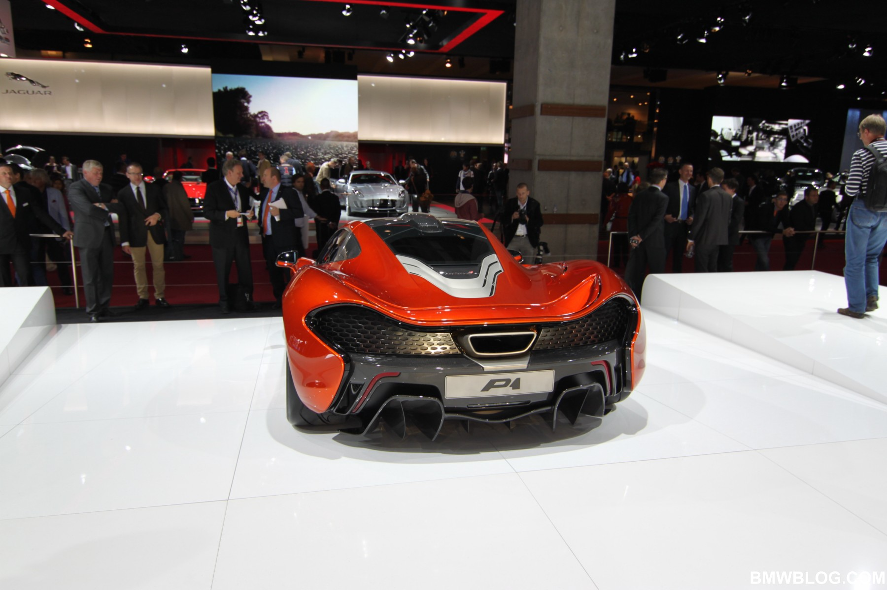
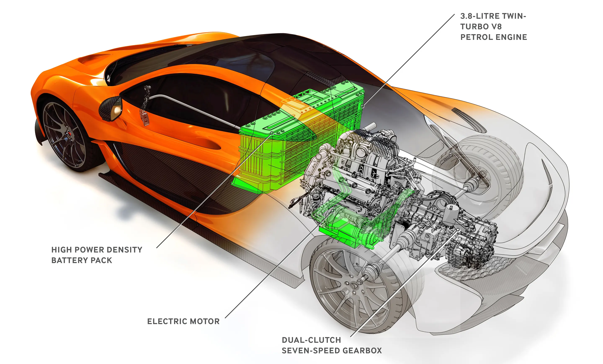
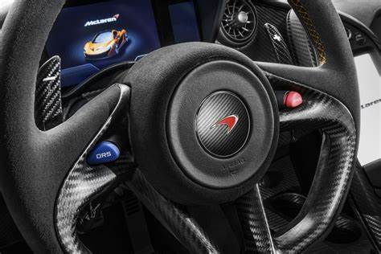
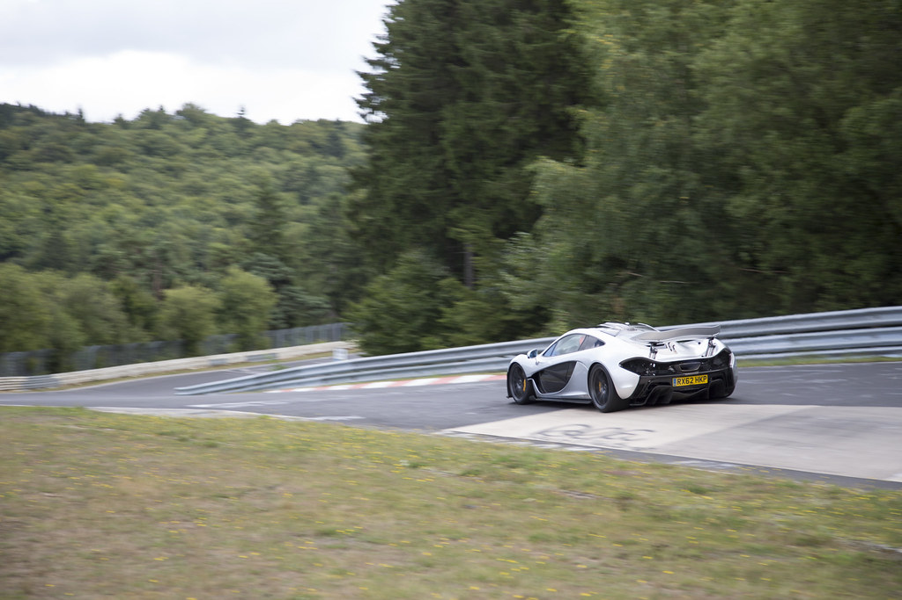

McLaren headquarters is located in Surrey, England. All engineering happens here, but production happens in Woking, England.

Fun Fact: The home button inside the P1™'s infotainment system is the shape of Mclaren's HQ.

Frank Stephenson is an American-Spanish automobile designer, who has worked with Ford, BMW, Mini, Ferrari, Maserati, Fiat, Lancia, Alfa Romeo, and McLaren. He is best known for his work on the Mini Coupe, the Maserati MC12, and of course the McLaren P1™.

McLaren first unveiled to P1 at the 2012 Paris Motor Show, the first time they chose to unveil a car at a major auto show, in their 49 years of business.

The P1™'s motor was a technological advancement in automobiles. Along with the Porsche 918 and Ferarri LaFerrari in the same year, they made some of the fastest hybrid cars in the world at the time.

The McLaren's steering wheel has two buttons on it, the red button activates IPAS, which gives the car a instant boost of power, provided by the electric motor. The blue button activates DRS, which is a temporary adjustment for the cars rear wing, which has active aerodynamics, that provides less drag on fast sections.

The P1™ set a sub 7 minute lap time at the Nürburgring Nordschleife, a feat only 26 road legal cars have ever achieved. A prototype model of the P1™ known as the P1™ LM, set the seventh fastest lap time ever at the Nurburing, although people debate whether it should be considered road legal, where it would be the third fastest road legal car at the Nurburing.